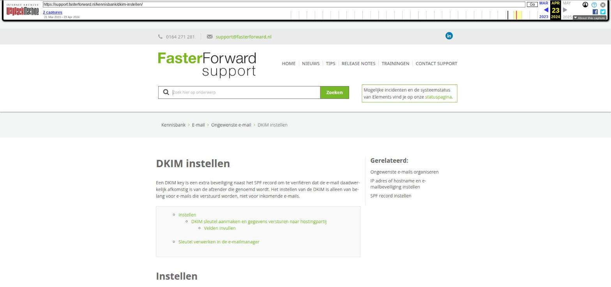

DKIM instellen

Tekstinhoud
DKIM instellen
Een DKIM key is een extra beveiliging naast het SPF record om te verifiëren dat de e-mail daadwerkelijk afkomstig is van de afzender die genoemd wordt. Het instellen van de DKIM is alleen van belang voor e-mails die verstuurd worden, niet voor inkomende e-mails.
Instellen
DKIM sleutel aanmaken en gegevens versturen naar hostingpartij
Velden invullen
Sleutel verwerken in de e-mailmanager
Instellen
Het instellen van de DKIM moet op 2 verschillende plekken gebeuren, namelijk in Elements en in de DNS van jouw domein. Het instellen in de DNS moet door jouw e-mailbeheerder/hostingpartij gebeuren. In Elements kan je de DKIM sleutel en bijbehorende gegevens aanmaken om vervolgens deze gegevens toe te sturen naar jouw hostingpartij. In dit artikel vind je de stappen voor het instellen van de DKIM in Elements.
DKIM sleutel aanmaken en gegevens versturen naar hostingpartij
Ga naar de beheermodule voor het aanmaken van de DKIM sleutel: Beheer – Email – DKIM sleutels. Let op: hiervoor dienen de juiste rechten aan te staan.
Klik op het groene plus teken bovenaan rechts van het pijltje.
Onderstaand scherm DKIM Sleutels verschijnt:
Velden invullen
Naam
Optie 1: Als het om de DKIM sleutel voor een specifiek persoon gaat, vul je hier het domeinnaam in gevolgd door de naam van de persoon. Voorbeeld: ditismijndomein.nl – Janssen
Optie 2: als het gaat om de DKIM sleutel voor de gehele organisatie, vul je hier alleen het domeinnaam in. Voorbeeld: ditismijndomein.nl
Domein: de domeinnaam. Voorbeeld: ditismijndomein.nl
Selector: de naam die je aan de DKIM sleutel wilt geven, bijvoorbeeld: key1. Indien je bij 'Naam' voor optie 1 hebt gekozen, vul je hier een naam in uniek voor die persoon. Bijvoorbeeld: key2 of Janssen.
Geheime sleutel: klik op de knop "Genereer geheime sleutel". In het "Geheime sleutel" veld staat nu je geheime sleutel aangegeven. In de rechterkolom onder het kopje DNS geeft Elements precies aan wat je in je DNS record moet zetten.
Wachtwoord van de geheime sleutel: dit veld is optioneel.
Een voorbeeld van een volledig ingevuld DKIM Sleutel scherm:
En in de rechterkolom:
Maak van bovenstaande schermen een printscreen en stuur deze naar jouw hostingpartij. Kopieer hierbij ook de regels die staan onder 'Neem het volgende op in de DNS:' en plak deze los in de e-mail erbij.
Sleutel verwerken in de e-mailmanager
De aangemaakte DKIM sleutel moet gekoppeld worden aan de e-mailadressen in Elements. Indien je e-mailadressen van meerdere domeinen in Elements hebt staan, zal voor elk domein een aparte sleutel aangemaakt moeten worden. Voor het koppelen ga je naar Beheer – E-mailmanager en neem je de volgende stappen:
Selecteer het betreffende e-mailadres en ga vervolgens naar het tabblad Beveiliging. Het is de middelste box met naam "DKIM".
Selecteer in het dropdown menu, de naam die je eerder aan het veld "naam" gaf. In ons bovenstaande voorbeeld was dat: ditismijndomein.nl – Janssen of ditismijndomein.nl
Klik hierna op de knop "Sla DKIM sleutel op".
Laatste update: 11 september 2023
Was deze informatie nuttig?
Ja Nee